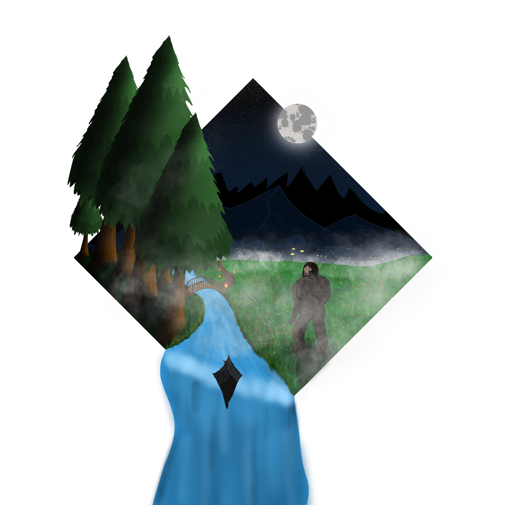
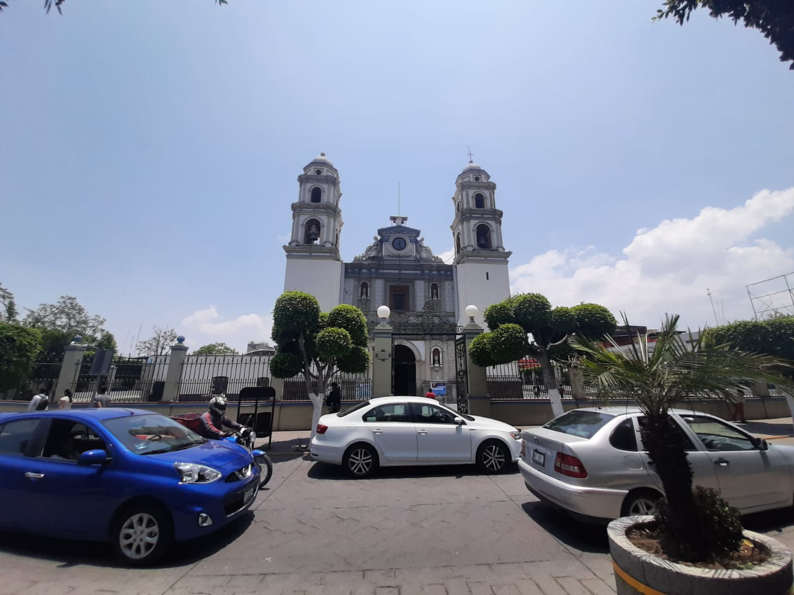

When reading Game Design UX Best Practices, by Amir Dori, all I could think about was my own interactions with games and the user experience I have. Some advice he chose to share was very helpful to my own design work. For example, Dori spoke about the use of “sliders”, and how this design technique can provide more space to include important features for the user without having to stop or pause their task on the main screen. When Dori mentioned how the space most accessible when we are using our phone, the comfort-to-reach area, I thought back to the apps I use on my phone and how that statement applied. It’s not just in games, but even instagram rearranged their interactive elements to highlight shopping, with the shop tab in the middle of the bottom screen, easy to reach and where the new post button used to be. Now all buttons to upload media/look at friends’ activity is at the top right corner, where most of us would think notifications are usually at. Some of the things you don’t even think about, like adding a 2 second delay before providing the option to exit out of an app, are so small but so critical to providing people with a good user experience. I will be sure to take these tips into my own designs.
Visual Thinking Analysis
May 6,2021
Aman's Photo
This image is beautiful! My first thought is, "wow, Aman is an artist!". I am immediately graviatated toward Aman's photo due to its bright use of color. The first two elements that stick out to me
is the water, that overflows from the rhombus shaped container, and the pine trees, that also overflow. It makes me wonder why Aman chose these two objects to
go outside the container, and if there is some significance. Especially with the water, since it is divided by a rock. The second most prominent element is the sasquatch, and it is looking toward the user, scared. And the fog in the air... makes it a very mysterious picture.
One thing I didn't notice until I kept admiring the picture is a walkway, but also there are torches illuminating the walkway, and head towards the city? Because of the fog you can't really see it, but I think that makes it more mysterious and
mystical. The moon is illuminating, adding on to its mystery of the image. I think this image is about fictional characters and fictional stories overall, maybe fairytales that Aman used to like as a child or still likes. See the image below, it is beautiful!

Aman Johal, 2021
My Image
Honestly, one of the images I am mot excited about is my image of the Cathedral of Tehuacan, which you can see below. First of all, it is a very beautiful church, it is 15 meters high, 14 meter wide, and 57 meters in length. It is big! And sits right in the center of Tehuacan.
From the outside, it has very beautiful architecture which is prominent from the renaissance era, as it was built in 1724. And you would not believe the inside, it has stained glass windows, its ceiling is painted with child angels and other biblical figures, and it has a lot of statues.
But honestly, the reason it is very meaningful to me is because it is right across the park in the center of Tehuacan, which is two blocks away from my maternal granparents' house. When I was a child and still, we would go to Tehuacan to visit my family that is still there. In fact, it was my coursin
who took this picture for me as a favor. We would go to the park to meet with my paternal grandfather, who lives in a small pueblo outside the city. So I always saw that church while waiting for my grandfather or while playing in the park or just walking by. And I've just always liked its architecture, it's big lot, and just how it looks. And the bell it rings at certain times.
You can see it is a busy area, with the cars surrounding its outside. There's a lot of community there.
And there are several street vendors in front of the church selling ice cream, fruit, handmade jewelry, and more. It is a nice area to be in.

Annette Campos, 2021
Interactive Storytelling: Close Reading and Visual Thinking Skills
April 29, 2021
In an article written by Michael Gonchar about close reading and visuals thinking skills, the author talks about the importance of slowing down
and taking the time to notice details and dig deeper to find the meaning of the text/image and understand its story or even promote discussion. Some tips that the author provides
to slow down include being detectives, practicing regularly, asking open-ended questions, noticing details, build on others' observations, starting conversations, and more. Something that
I thought was useful was when the author mentioned removing the caption and context of a photograph so that more observations are made to try to figure out what is going on. I think this article presents
good strategies for our upcoming project.
I was able to apply these critical thinking, reading, and visual skills in a cool website I found on awaaards.com, which was an interactive site talking about Krzysztof Penderecki. The website, Penderecki's Garden
uses useful images, videos, and music to tell the story of Penderecki, a great 20th century composer and gardener. The website is a virtual garden of the composer telling more of the composer's life story. Users can click around the site and explore different elements. The site is
beautiful and is composed of millions of dots to create imagery. Once a user clicks on an element, an overlay presents the user with text information, a video or an image, and it feautres a bar at the bottom letting you know what percentage you have explored in the area you are in.
There's a lot to explore on the Website and the movement within it makes it very interesting and visually-appealing.
Not to mention the beautiful music that accompanies the searching! Please check it out, I barely touched based.
Best Practices for Modals/Overlays
April 22, 2021
After reading Best Practices for Modals/Overlays/Dialog Windows by Naema Baskanderi, I was able to understand the need
to design functional and user-centered UX/UI design to make sure users are willing to engage with the application.
As a standard, certain things need to be considerd while designing these types of windows, such as an developing a way to escape, including a descriptive title,
creating the container the right size for its main screen, and making sure to add focus to the new window by creating a lightbox effect.
Best Coding and Design Practices
April 17, 2021
A website that I feel uses good coding and design practices is the Spotify Design Website. Despite using many divs in their code, it is used to keep the page nicely
formatted and easily readible.
For code, they have their banner at the top, with external links linked before their own styling pages, a body element which contains all the div classes used, a main element, and a footer. For design, they
include a progress bar at the top which lets the reader know how much longer until the article is finished, have their paragraphs are condensed, include images, and use a nice color palette. I hope to use these designing practices when developing my own windows in future web designs.